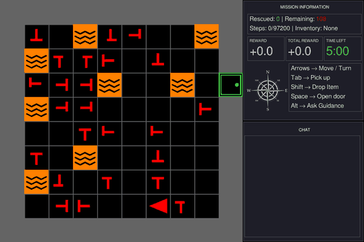
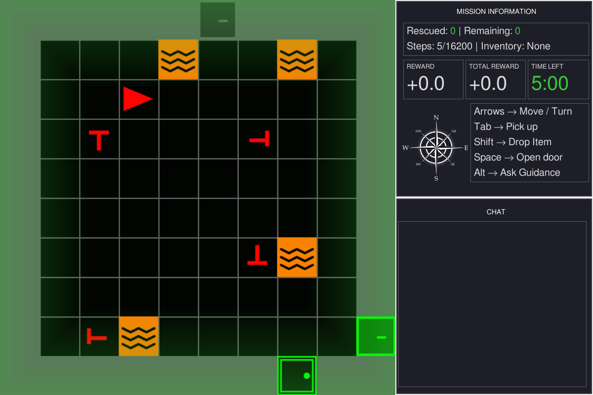
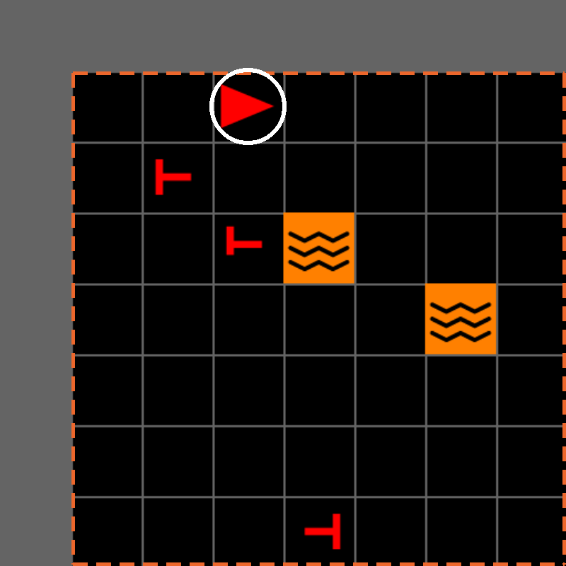
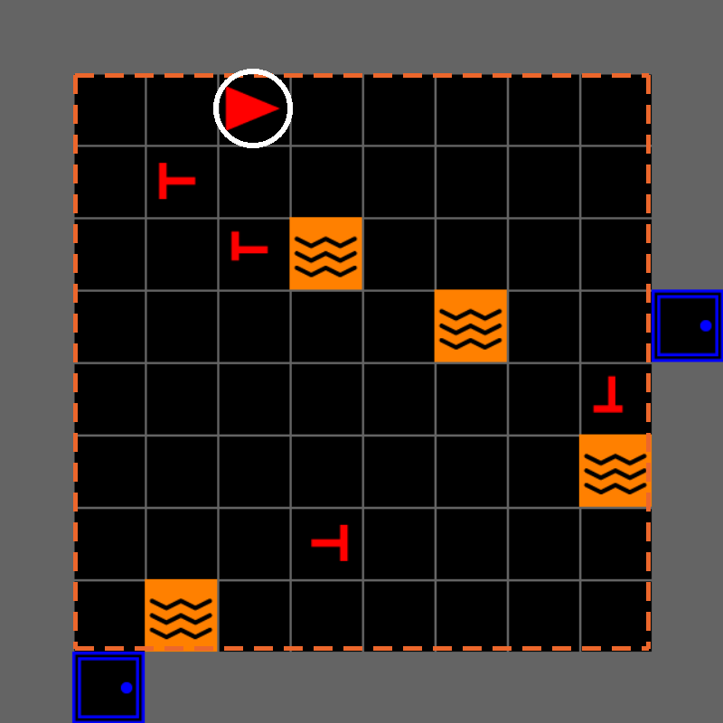
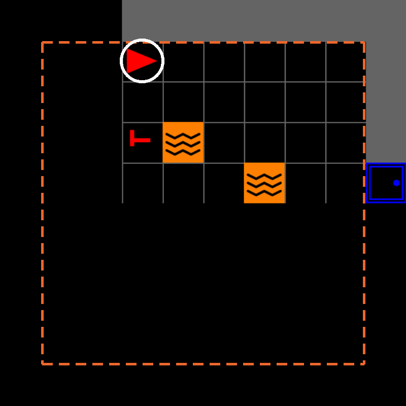

MOSAIC
A Configurable Testbed for
Human–AI Teaming
IEEE SMC 2026 · Bellevue, WA
github.com/iHuman-Lab/mosaic
iHuman Lab · Oklahoma State University
October 4, 2026
Meet the iHuman Lab

Hemanth Manjunatha Principal Investigator

Elahe Oveisi PhD Student

Bennett Kwaku Dogbey PhD Student
We study human interaction with intelligent and robotic systems.
Why Do We Need MOSAIC?
Human–AI teaming cannot be studied from isolated prompts and responses alone.
01
Meaningful decisions
The participant acts in a task where choices have visible consequences.
02
Interactive AI assistance
The AI teammate receives task context and communicates during the task.
Human–AI teaming
MOSAIC
one configurable testbed
03
Experimental control
Researchers vary reliability, timing, wording, and task conditions.
04
Synchronized data
Actions, observations, advice, and outcomes share one experimental record.
MOSAIC brings these requirements together in one configurable research testbed.
What Is MOSAIC?
MOSAIC is a configurable research testbed for studying human–AI teaming in interactive environments.
Human participant
Sees the task and chooses every action.
actions
observations
MOSAIC task
The environment, the interface, and session control.
task context
advice
AI teammate
Receives task context and returns advice.
recorded together
Session data
Actions, observations, advice, and outcomes share one timeline.
First Testbed: Search and Rescue

Why this task
- The participant navigates a multi-room environment
- Victims, decoys, lava, doors, and keys create tradeoffs
- Limited visibility creates uncertainty
- Decisions produce immediate consequences
- An AI teammate can advise from the current task state
Search and rescue provides a controlled but consequential setting for studying human–AI decisions.
The Human–AI Teaming Loop
Every decision point runs through the same six steps.
1 Observe
The participant sees the current room and mission state.
2 Share context
MOSAIC turns the task state into context for the AI teammate.
3 Advise
The teammate produces advice and it appears in the chat panel.
4 Evaluate
The participant judges whether the advice fits what they can see.
5 Act
The participant chooses the action. The teammate never acts.
6 Record
MOSAIC records the advice, the action, and the outcome together.
The AI teammate can influence the decision, but the participant retains final action authority.
What Can Researchers Study?
Reliability
How does teammate reliability affect trust and reliance?
Timing
When should an AI teammate intervene?
Communication
How do explanation and confidence affect decisions?
Workload
How does workload influence whether advice is followed?
Recovery
How do people respond after incorrect advice?
Team learning
How does team performance change over repeated interactions?
Next, we install MOSAIC and run the mission ourselves.
Part Two
Install MOSAIC
Check · Clone · Install · Verify · Run
What it is Install and run Understand and customize
Before You Start
Four prerequisites, and the eight packages MOSAIC pulls in.
Python 3.10 or 3.11
Git Any recent version; no account needed
Terminal PowerShell, macOS Terminal, or a Linux shell
Display A local desktop — the game opens a window
No API key is required for this tutorial.
pip install -e . brings in
minigrid gymnasium numpy pandas pygame_gui tabulate pyyaml python-dotenv
then we swap one of them
pygame pygame-ce
pygame_gui needs pygame-ce, MOSAIC declares pygame, and both own the same pygame namespace — that is the one manual step.
Clone MOSAIC and Create the Environment
One repository, one environment. Everything today runs from inside it.
Your prompt begins with (mosaic_env), and python --version reports 3.10 or 3.11.
Install MOSAIC
Run these from the mosaic directory, inside the active environment.
Line 2 Installs mosaic in editable mode, with the eight dependencies.
Lines 3–4 Swap in pygame-ce. --force-reinstall is required — a plain install reports “already satisfied” and repairs nothing.
ERROR: mosaic 0.1.0 requires pygame, which is not installed. is expected and harmless — pygame-ce satisfies it in practice.
Verify the Installation
Verify that the environment and GUI APIs are available.
build_sar_env builds the task. SAREnvGUI puts a person in it. Everything today uses these two.
Run the Included Mission
Move Arrow keys turn and walk the agent
Rescue Tab picks up the victim you face
Quit Esc closes it, F11 toggles fullscreen

Rescued and Total Reward climb as each victim is reached.
First Checkpoint
Confirm
The window opened
Arrow keys move the agent
The information panel updates
Esc closes it cleanly
| Symptom | Recovery |
|---|---|
No module named 'mosaic' |
Activate mosaic_env, rerun pip install -e . |
No module named 'experiment' |
Run from the repo root with PYTHONPATH=src |
DIRECTION_LTR or pygame.surface error |
Repeat the pygame-ce force-reinstall |
| PowerShell cannot activate | Use the leading .\ on Activate.ps1 |
No window, or No available video device |
Run locally, not over SSH |
Everyone with a window open is ready for Part Three.
Part Three
Use and Customize MOSAIC
Read the interface · Learn the layers · Change the mission
What it is Install and run Understand and customize
What Just Ran?
The GUI sends participant actions through the Gymnasium interface and renders the observations returned by the SAR environment.
Human participant
Watches the game view and presses keys
key presses rendered frames
MOSAIC GUI mosaic.gui
Game view, information panel, chat panel, event feedback
env.step(action) observation + events advice
SAR environment mosaic.sar
Victims, hazards, rescue actions, rewards, observations
AI teammate mosaic.llm
Receives task context, returns advice to the chat panel
the SAR environment is built on
Gymnasium + MiniGrid
Step interface, grid world, and partial observability
Game Interface
What the tiles mean, and where to read the mission.

Game viewport — the green flash is rescue feedback
Information panel — rescued, remaining, steps, inventory
Mission status and score — reward and the clock
Controls, always on screen
Chat panel — where AI teammate advice arrives
You

Victim
Decoy

Lava

Locked door

Key
Victims, Hazards, Doors, and Keys
Real victims and decoys use different cross symbols.

REAL VICTIM DECOY
Symbols The symmetric cross counts; the offset cross is a decoy. Facing direction is not the tell.
Lava Blocks unsafe tiles and constrains the safe routes through a room.
Doors and keys A locked room needs the matching key, found elsewhere in the building.
+1.0 Real victim rescued
−1.0 Decoy rescued
−2.0 Victim reached too late
The reusable default places real victims. The included study configuration adds decoys.
Controls and Gameplay
Six keys, grouped by what you are trying to do.
Navigate
↑ Move forward one tile
←→ Turn to face a new direction
Open
Space Open the door you are facing
Pick up or rescue
Tab Take the key, or rescue the victim, you are facing
Request advice
Alt Ask the AI teammate
Backspace restart · F11 fullscreen · Esc quit
Check the symbol before rescuing — decoys reduce the score. AI advice is available when a teammate is configured; until then Alt replies “Currently, no commands are available.”
Camera Views
One seeded world, one agent position, three camera strategies.

Edge-following view
EdgeFollowCamera follows the agent and may show parts of neighboring rooms.

Room view
AgentFOVCamera shows the complete room the agent occupies.

Forward field of view
AgentConeCamera blacks out tiles outside MiniGrid’s forward field of view.
Agent same tile in all three · Room the room the agent is standing in
The task state remains unchanged; only the participant’s visibility changes.
The MOSAIC Software Layers
Each layer owns one responsibility, and each is a directory you can open.
| Directory | Files | The interface you use |
|---|---|---|
mosaic/core/ |
level.py camera.py placers.py |
SARLevelGen, CameraStrategy, Placer |
mosaic/sar/ |
env.py objects.py actions.py placers.py observations.py |
build_sar_env(...), VictimPlacer, RescueAction |
mosaic/gui/ |
main.py user.py info.py chat.py feedback.py |
SAREnvGUI(env, config, llm_client) |
mosaic/llm/ |
client.py parser.py prompts.yaml |
LLMClient.query(prompt) -> str |
experiment/ |
main.py game.py placers.py llm.py sensors/ |
your study’s composition |
mosaic/ is reusable across studies. experiment/ composes it for one study.
How the Mission Is Composed
src/experiment/main.py constructs the environment, attaches the interface, and starts the interaction loop.
game_config = yaml.safe_load(open(config_path))["game"]
env = build_sar_env(
screen_size=800,
num_rows=3, num_cols=3, room_size=10,
victim_placer=LavaRiskVictimPlacer(
num_real_victims=game_config["num_real_victims"],
num_fake_victims=game_config["num_fake_victims"]),
lava_placer=SectorSpreadLavaPlacer(
lava_per_room=game_config["lava_per_room"]),
locked_room_placer=LockedRoomPlacer(locked_room_prob=0.5),
camera_strategy=AgentFOVCamera(),
)
env.reset()
gui = SAREnvGUI(env, config=config,
llm_client=build_llm_client("dummy"))
gui.run()build_sar_env(...) Task configuration — rooms, victims, hazards, doors, camera.
configs/experiment.yaml Where the study’s counts live: 12 real and 12 decoy victims per room, 8 lava tiles.
SAREnvGUI(...) Human interaction — view, panels, keys.
llm_client= The AI teammate. "dummy" needs no key.
gui.run() The interaction loop.
LavaRiskVictimPlacer and SectorSpreadLavaPlacer live in experiment/placers.py — this study’s subclasses of the reusable ones.
Change One Parameter and Rerun
Open src/experiment/main.py, change one value, and run the same command again.
Building size
num_rows, num_cols
How many rooms to search
Room size
room_size
How much ground each room costs
Key hunting
locked_room_prob
How often a room needs a key
Save the file, rerun the same launch command, and identify how the mission changed.
Connect an AI Teammate
In MOSAIC, an AI teammate implements a provider-independent text-in/text-out interface.
Task observation → prompt construction
AI teammate → response processing
Chat panel → human decision
Vary Reliability · latency · timing · wording · confidence · explanation · provider
build_llm_client("dummy") needs no key and replies “Currently, no commands are available.” Swapping in "openai" or "google" is a one-argument change — see the appendix.
Where to Go Next
MOSAIC exposes several replaceable components, so a study can vary task mechanics, visibility, interaction, advice, or logging independently.
Task mechanics
New SAR placement rules or reward structures change what the mission asks of a participant.
mosaic.sar — placers, actions, rewards
Visibility
Alternative camera and observation strategies change what the participant can know.
mosaic.core — camera strategies
Interaction and advice
Customized information and chat panels, and scripted or provider-backed AI teammates.
mosaic.gui, mosaic.llm
Instrumentation
Study-specific logging and sensing, layered on without editing the task.
experiment/ — sensors, logging, replay
Start with the included mission. Change one component at a time.

Thanks!
Questions?
bennett.dogbey@okstate.edu
Appendix
Technical notes and troubleshooting
Detailed Installation Recovery
The rarer failures — the four common ones are on the checkpoint slide.
| Symptom | Recovery |
|---|---|
DIRECTION_LTR or pygame.surface errors |
Force-reinstall pygame-ce |
ensurepip is not available |
Install python3-venv, recreate mosaic_env |
No module named 'tabulate' |
python -m pip install tabulate |
python --version reports 3.9 or older |
Recreate mosaic_env on Python 3.10 or 3.11 |
Why pygame-ce. MOSAIC’s package metadata installs plain pygame, but pygame_gui expects pygame-ce — and both claim the same pygame namespace, so they cannot coexist. Reinstalling pygame-ce last gives the interface the implementation it expects; pip may still report that MOSAIC declares pygame, so trust the readiness check instead.
Step Observation
Every step returns the full task state as one flat dictionary — this is what a study records.
| Group | Keys |
|---|---|
| Agent state | agent_x, agent_y, agent_dir, direction, carrying |
| Mission state | mission, mission_status, saved_victims, remaining_victims, victim_health |
| World state | grid, num_rows, num_cols, room_size |
| Visual state | image, and cam_top_x / cam_top_y / cam_view_w / cam_view_h |
| Episode state | step_count, max_steps |
The groups are a reading aid; the observation itself is flat. image is MiniGrid’s partial agent view, not the rendered frame, and the four cam_* keys are added only by EdgeFollowCamera.
AI Teammate Interface
Provider configuration lives outside the reusable task environment.
LLMClient and DummyLLMClient live in the reusable mosaic.llm.client module; build_llm_client and LlamaIndexLLMClient live in the study layer at src/experiment/llm.py. A provider needs the matching key in the environment (OPENAI_API_KEY or GOOGLE_API_KEY); without one, the chat panel shows the provider error and the mission keeps running.
Instrumentation and Replay
Record the session on one clock, then play it back.
Eye tracking experiment/sensors/eye_tracker/ streams gaze from a Tobii device.
Shared clock Sensor streams synchronize through Lab Streaming Layer (LSL), via the lab’s ixp package.
Trial capture SARGameTrial records enough of the session to fully reconstruct it.
Each line of the recording is one game state from the LSL stream; replay renders them back as video for review or stimulus-locked analysis.
Actions, advice, outcomes, and gaze land on one timeline — that is what makes the session analyzable.
Future Applications
The extension seams that actually exist today.
Task mechanics
Placers, actions, and rewards are constructor arguments on the SAR environment, so a condition is a configuration rather than a fork.
Verified seam: build_sar_env(...)
Observations and presentation
Camera strategies and the observation processor decide what the participant sees and what the study records.
Use EdgeFollowCamera, AgentFOVCamera, or AgentConeCamera
Teammate backend
Anything implementing query(prompt) -> str can be the teammate — a script, a provider, or an experimental manipulation.
Reliability as a manipulated variable
Study instrumentation
Sensors, logging, and replay live in experiment/, layered onto the reusable package rather than edited into it.
One clock across every measure
The task was the example. The interfaces are the contribution.

MOSAIC Tutorial · iHuman Lab · Oklahoma State University